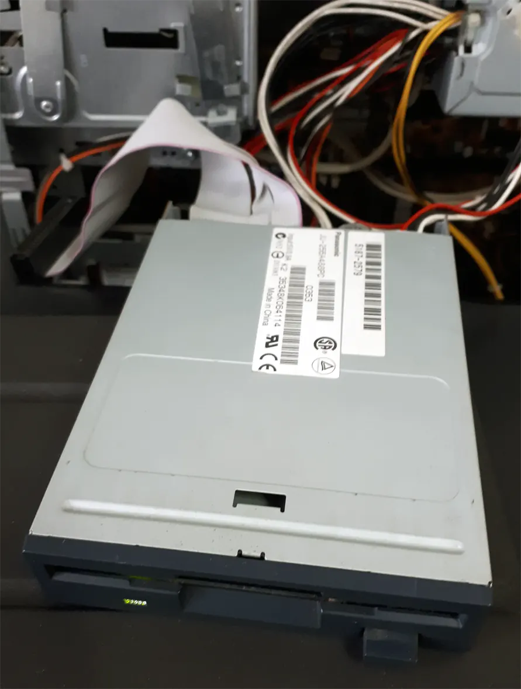

Unbricking a BIOS-bricked motherboard
Have you ever been in a situation when flashing a new BIOS goes wrong and your motherboard become a doorstop? We've all been there, so keep on reading.
How to flash a new BIOS without the motherboard even POSTing
Note: This tutorial is meant for AMI BIOSes. Said that, you can google the procedure for your particular BIOS.

- Download a working BIOS for your motherboard from a trusted website
-
If it's an EXE or ZIP try to extract the files within with something like 7-Zip. The BIOS file should be:
- Usually ending with .ROM
- Being of a power of 2 in size (like 1MB, 2MB, 4MB, ...)
- If your motherboard is old enough to have a floppy connector go head and plug it in
- If (lucky you) your motherboard doesn't have any floppy connector it means that you can just use a normal USB key
- Find a floppy (or a USB key) and format it using FAT
-
Take the BIOS file, rename it to
AMIBOOT.ROM and copy it to the floppy/USB key
- If your motherboard is an HP one, use
HPBIOS.ROM instead
- Insert the floppy/USB key in the right place
- If your motherboard has a PS/2 keyboard connector please use one, otherwise just use your normal USB keyboard
- While powering on your PC hold
CTRL+HOME until you see the floppy drive/USB key LED blinking
- Wait until you hear 5 beeps
- Reboot